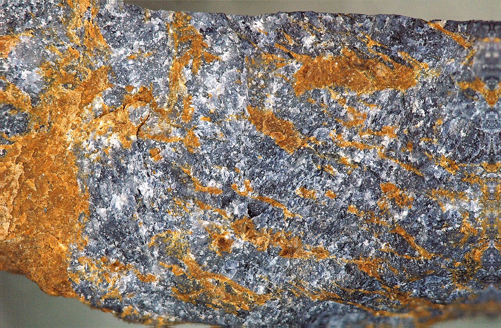

Szmergiel

Zdjęcie przedstawia skałę Naxos szmergiel (źródło).

Szmergiel, w jednym przypadku nazywany także smyris, to ciemnoszara do czarnej ziarnista skała złożona głównie z korundu zmieszanego z innymi minerałami. Ma grubą, ziarnistą konsystencję. ¹ Fragment Chalcedon mówi, że kamień jest przebijany szmergiel przed założeniem na szyję. ²
Źródła
1. Wikipedia — Emery (rock)
2. St. Albertus Magnus — The Book of Minerals, Tractate II, “Calcedonius”
Chalcedonius (chalcedon) to kamień bladoszary, a raczej ciemny. Jeśli zostanie przebity mocą kamienia zwanego smyrisem (szmergiel) i zawieszony na szyi, mówi się, że jest dobry przeciwko fantazyjnym iluzjom wynikającym z melancholii.